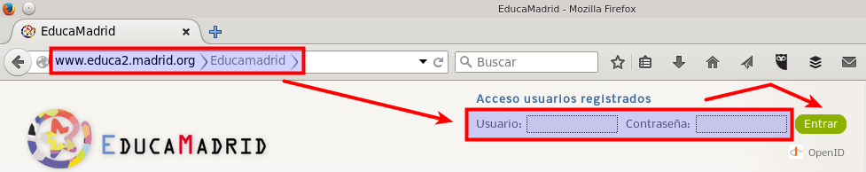
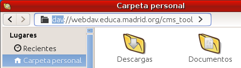

Directorio de ficheros de Educamadrid

EducaMadrid, entre todos sus servicios, ofrece a sus usuarios un servicio de directorio de ficheros en la red, asignando a día de hoy 5GiB para cada usuario. Utiliza el protocolo abierto WebDav, lo que garantiza que podamos acceder con una gran variedad de aplicaciones. En este apartado vamos a describir cómo utilizar dicho servicio desde nuestro equipo con MAX.
Lo primero que tenemos que saber, es que en la página principal de EducaMadrid, podemos iniciar sesión y así entrar en nuestro gestor de contenidos personal. No es el objeto de este apartado, descubrir todas las posibilidades de dicho gestor de contenidos, que incluyen la posibilidad de crear vuestra propia página web y comunidades virtuales para elaborar contenidos de forma colaborativa con otros colegas. En las páginas de ayuda de EducaMadrid nos lo explican también paso a paso.
Vamos a repasar el proceso completo para usar el directorio de ficheros WebDav de EducaMadrid a continuación:
1.- El primer paso, como acabamos de decir, es iniciar sesión en el portal de EducaMadrid, con nuestro usuario y contraseña, el mismo que utilizáis para este curso, sin incluir la arroba ni el dominio (educa.madrid.org)

2.- Una vez dentro iremos directamente a "Mis páginas privadas" o igualmente, al de la comunidad virtual o centro que se esté administrando. Desde ahí en la siguiente pantalla debemos pulsar en "Administrar" y después en "Directorio de Ficheros". El desplegable de Administrar se encuentra arriba del todo de la página y a la izquierda, en una barra de tareas que a veces se puede confundir con la del navegador. Al desplegar Administrar nos salen varias opciones, una es el Directorio de Ficheros.


3.- Al lado de Administrar nos aparecerá una casilla de "Administración avanzada" que tendremos que seleccionar. Ahora ya nos podemos fijar en la parte de abajo, donde muestra un resumen de las carpetas y archivos que tenemos y el espacio ocupado, así como las opciones para la navegación y añadir o borrar elementos. Abajo del todo, muestra un enlace, cuando está activada la Administración Avanzada, que reza "Acceso directo desde mi ordenador"

4.- Tenemos que copiar el texto de la "URL de Web DAV" para ahora ya poder olvidarnos del navegador de internet e ir al explorador de archivos de nuestro MAX. Accedemos a dicho explorador de archivos mediante el icono de Equipo, Carpeta personal o cualquier otra carpeta que tengamos en el escritorio o nuestros documentos. Desde el menú de la derecha buscamos el sub-menú de "Introducir Lugar", abreviado por la combinación de teclas Ctrl+L:

5.- Ahora nos saldrá un cuadro de diálogo (en Xfce) o un formulario arriba de la venta (en GNOME) pidiendo la dirección de dicho lugar:

6.- Pegamos en el campo de Lugar la dirección que habíamos obtenido más arriba (paso 5) de nuestro administrador de ficheros en la web de EducaMadrid, con la precaución de sustituir el prefijo http por dav:

7.- A continuación nos pedirá nuestras credenciales: usuario de EducaMadrid y contraseña, conviene decirle que las recuerde hasta que salgamos de la sesión. Hay que tener en cuenta que en el nombre de usuario no hay que incluir @educa.madrid.org. Ojo, nunca debemos decirle que recuerde para siempre la contraseña si estamos en un ordenador compartido por otras personas.

8.- Si todo es correcto nos mostrará los contenidos de la carpeta "en la red" La mejor manera para comprobar cómo funciona será hacer este mismo paso desde varios ordenadores y ver que lo que modificamos desde uno lo vemos desde los demás, en todos los casos estamos modificando carpetas y archivos que se encuentran alojados en EducaMadrid

9.- Si la idea que tenemos es de usar con frecuencia estos 5 GBs que nos da EducaMadrid, a modo de "memoria USB en línea", lo mejor que podemos hacer es añadir este lugar a los marcadores. Para ello, nos vamos al menú de la carpeta donde tenemos los contenidos abiertos, y desde ahí seleccionamos el menú de "Añadir este lugar a marcadores". O más sencillamente, usamos la combinación de teclas de Ctrl+D.
Una vez añadido a los marcadores, lo hará seguramente con el nombre de "Carpeta raíz", que no nos va a decir nada especial para saber qué tenemos ahí realmente. Lo mejor por lo tanto, es renombrarlo, tal y como se muestra en la siguiente imagen:

10.- Siguiendo las instrucciones de EducaMadrid también podréis configurar vuestro dispositivo tableta o móvil Android o iOS para acceder al Directorio de ficheros de EducaMadrid.